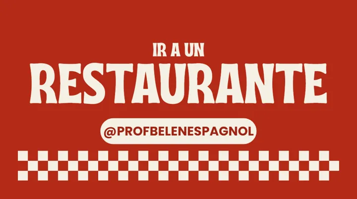
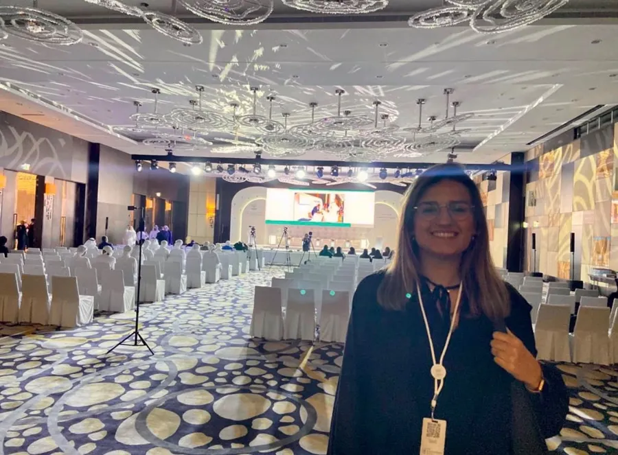

❤️
Ton conjoint ou ta belle-famille parle espagnol
Tu veux suivre les repas de famille, faire des blagues, et ne plus être « celle ou celui qui ne comprend pas ».
Cuéntame, suegra…En savoir plus →
Tu comprends un peu l'espagnol… mais les mots ne sortent pas ? Je t'aide à débloquer l'oral avec des cours en ligne pensés pour les francophones. Sans prise de tête, et sans retour sur les bancs de l'école.
Réserver mon appel découverte →profbelenespagnol propose des cours d'espagnol en ligne pour adultes francophones, donnés par Belén Payá, professeure espagnole native. L'objectif : débloquer l'oral et parler espagnol avec confiance dans la vie réelle, en voyage, en famille ou au travail.
Mes élèves ne partent jamais vraiment de zéro. Ils ont souvent fait de l'espagnol au collège, essayé Duolingo ou des vidéos. Mais face à une vraie personne…
Tranquille. Le problème n'est pas ton niveau. C'est qu'une application ne t'apprendra jamais à parler avec ta belle-famille. Pour ça, il faut parler, être corrigé, et recommencer.
Tu es adulte, francophone, et tu as une vraie raison d'apprendre l'espagnol.
Tu veux suivre les repas de famille, faire des blagues, et ne plus être « celle ou celui qui ne comprend pas ».
Cuéntame, suegra…En savoir plus →
Commander au restaurant, demander ton chemin, discuter avec les voisins : sans traducteur et sans mimer.
Una caña, por favorEn savoir plus →
Retraite au soleil ou nouveau départ : tu veux être autonome pour le médecin, la banque, la mairie.
Me mudo a AlicanteEn savoir plus →
Réunions, appels, collègues : tu veux être à l'aise et à la hauteur, en espagnol.
¿Hablamos el lunes?En savoir plus →
Je ne suis pas la prof qui explique la grammaire et donne des exercices. Je t'accompagne, étape par étape, jusqu'à ce que tu oses parler.
La grammaire est là, mais c'est un outil.
Le but, c'est de parler.
Tu parles dès la première séance, sur des sujets de ta vie : ta famille, tes voyages, ton travail.
Je te corrige au bon moment, avec bienveillance, sans casser ton élan.
On apprend les mots dont toi, tu as besoin. Pas « la pomme est sous la table ».
Pour garder le contact avec l'espagnol toute la semaine et entraîner ton oreille.
Courts, utiles et adaptés à tes objectifs. Tu sais toujours sur quoi tu avances.
Chez le médecin, au restaurant, en voyage, au travail… Chaque séance part d'une situation que tu vas vraiment vivre.



30 minutes pour faire connaissance, parler de ton objectif et voir où tu en es. Gratuit.
On fixe ensemble un objectif réaliste et le rythme qui te convient.
Tu parles, je te corrige, et tu repars avec des audios et des devoirs personnalisés.
Au restaurant, au téléphone, avec tes proches. Et tu te rends compte que tu en es capable.
Pas de cours à l'unité : pour progresser, il faut de la régularité. Chaque programme est un accompagnement sur plusieurs semaines.
Tu pars de (presque) zéro ou tu as tout oublié depuis le collège ? On pose des bases solides, en parlant dès le premier jour.
Tarif présenté lors de l'appel découverte · Voir les cours particuliers
Tu comprends bien mais tu bloques pour parler ? On travaille la fluidité, la spontanéité et la confiance, comme une longue conversation à table.
Tarif présenté lors de l'appel découverte · Voir le cours de conversation

Un petit groupe, des natifs, un verre à la main : on pratique en conditions réelles, dans une ambiance détendue.
Inclus pour les élèves
Des vrais messages, reçus sur WhatsApp. Sans retouche (ou presque).
Ça fait un mois que j'ai commencé et je sens déjà que j'ai progressé : je suis plus à l'aise pour parler… Même si je fais encore beaucoup de fautes, ça va vite avec Belén !
Buenas tardes Belén
He hecho mi primer pedido en español por teléfono! 😄
Je suis content de mes progrès depuis décembre. Tu m'as fait beaucoup progresser et aujourd'hui je peux tenir des petites conversations avec mon entourage.
Dans nos cours, ce qui m'aide le plus, c'est ta pédagogie, les explications et les exemples que tu donnes. Mais aussi le temps que tu prends pour que les difficultés soient assimilées.
Je progresse et je le sens, c'est agréable.
J'ai discuté football, de la chaleur en Espagne… et des plats typiques de Madrid 😂
Que de sujets abordés en une semaine !
Quiero decirte que estoy muy feliz porque entiendo todo en español y que puedo hablar con muchas personas 😊
Belén es una buena profesora.
Está atenta y muy comprometida.
C'est un vrai plaisir de faire cours avec toi, à chaque fois. Merci infiniment pour ton soutien et la qualité de ton accompagnement. Tu me fais vraiment progresser.
Être débutant dans un domaine n'est pas facile, mais tu as l'écoute et la patience nécessaires pour me permettre de comprendre et de m'approprier la langue.
Je suis heureux d'avoir fait le choix de te faire confiance pour mon apprentissage de l'espagnol. Je suis sûr que mes voisins apprécieront mes progrès cet été.
J'ai vraiment adoré. J'ai trouvé les échanges très fluides. Je me suis sentie à l'aise.
C'est vrai que j'ai osé parler, je suis assez contente.
J'ai vraiment fait le bon choix en venant vers toi 😍 Estoy muy muy contenta 🤩
Merci de te creuser la tête pour rendre ton enseignement toujours plus ludique et agréable.
Travailler avec toi est un vrai plaisir.
Ça va venir et je suis confiant pour mon prochain voyage en Espagne ! Grâce à toi. MERCI
Mon travail est avalé par trois institutions de référence pour la langue, la culture et l'enseignement, en Espagne et en France.
Instituto CervantesLangue et culture espagnoles
Institut françaisLangue et culture françaises
Université d'AlicanteRecherche et enseignement universitaire


Je suis espagnole et j'ai créé profbelenespagnol pour les adultes francophones qui veulent parler espagnol depuis longtemps, pour leur couple, leur famille, leurs voyages, un déménagement ou leur travail, mais qui restent bloqués au moment de parler.
Je viens du monde de la linguistique et de l'université (on me voit en conférence sur les photos 😉). Mais dans mes cours, pas de jargon : je t'aide à gagner en confiance et en autonomie, avec un accompagnement structuré, proche et personnalisé.
Je ne te promets pas de parler parfaitement en quelques semaines. Je te promets d'avancer, petit à petit, avec une direction claire. Et de retrouver l'envie.
Belén
profbelenespagnol
12 kabonnés
en direct
Belén · Prof d'espagnol 🇪🇸
Je t'aide à parler espagnol avec confiance, sans prise de tête.
Astuces, vocabulaire et vraie vie en Espagne, chaque semaine.
Chaque semaine : du vocabulaire utile, les erreurs typiques des Français, des expressions de la rue et des coulisses de la vie en Espagne. Gratuit, en deux minutes par jour.
Belén Payá de la Cruz est une professeure d'espagnol native, originaire d'Espagne, qui donne des cours d'espagnol en ligne aux adultes francophones. Tu la connais peut-être sur Instagram, où elle partage chaque semaine des astuces sous le nom @profbelenespagnol.
Soyons honnêtes : non. Mais avec un accompagnement régulier, tu peux tenir tes premières vraies conversations en quelques mois, et gagner en confiance dès les premières séances.
Non. Pour progresser vraiment, il faut de la régularité. Je propose un accompagnement sur plusieurs semaines, avec un objectif clair et un suivi entre les séances.
Non. J'accompagne les grands débutants comme les personnes qui comprennent beaucoup mais qui bloquent à l'oral.
En visio, depuis chez toi, à l'heure française. Entre les séances, tu reçois des audios, ton vocabulaire et des devoirs personnalisés.
Je suis espagnole : tu apprends l'espagnol d'Espagne, et je t'explique les principales différences avec l'espagnol d'Amérique latine.
C'est le cas de beaucoup de mes élèves ! Ici, pas de notes ni de pression : on a le droit de se tromper, c'est même comme ça qu'on apprend.
Réserve ton appel découverte : on parle de ton objectif, de ton niveau, et je te dis honnêtement comment je peux t'aider.